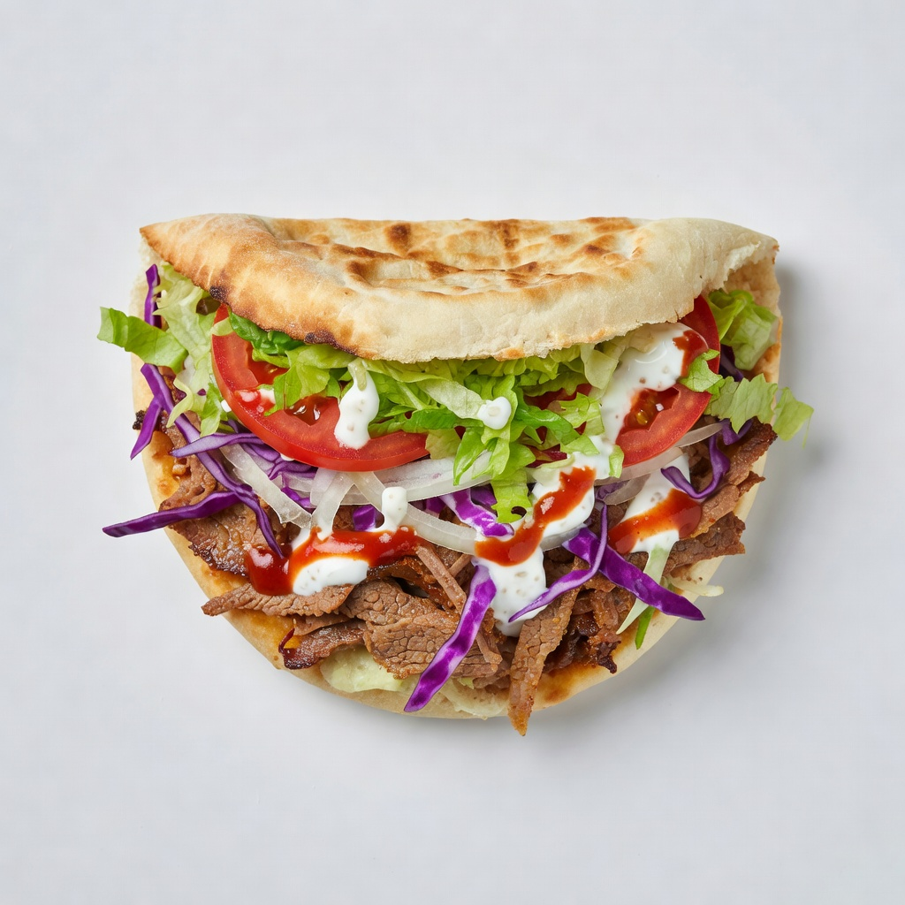

Receta de kebab
Características
- Dificultad: Facil
- Duración: 25 minutos
- Calorías por porcion: 555 kcal.
- Raciones: 2
- Coste: Bajo
Ingredientes
| Nombre | Cantidad | Notas |
|---|---|---|
| Pechuga de pollo | 200 Gramos | Cocinar |
| Aceite de oliva | 1 cucharada | Para la carne |
| Pimentón dulce | 1 cucharadita | Para la carne |
| Comino | 1 cucharadita | Para la carne |
| Ajo en polvo | 1 cucharadita | Para la carne |
| Pimienta negra | Una pizca | Para la carne |
| Sal | Una pizca | Para la carne |
| Pan de pita | 2 | Para emplatar |
| Lechuga | 100 Gramos en juliana | Para emplatar |
| Tomate | 1 en rodajas | Para emplatar |
| Cebolla morada | 1/2 en tiras finas | Para emplatar |
| Yogur griego | 2 | Para la salsa yogurt |
| Zumo de limón | 1/2 de limon | Para la salsa yogurt |
| Ajo | Un diente | Para la salsa yogurt |
| Hojas de menta | 1 cucharada | Para la salsa yogurt |
| Aceite de oliva | 1 cucharada | Para la salsa yogurt |
| Sal | 1 pizca | Para la salsa yogurt |
| Pimienta negra | 1 pizca | Para la salsa yogurt |
Elaboración
Para preparar un kebab de pollo con pan de pita y salsa de yogur casera, primero corta la pechuga de pollo en tiras muy finas y mézclalas en un bol con un chorrito de aceite de oliva, pimentón, comino, ajo en polvo, sal y pimienta negra. Deja reposar la carne durante unos minutos para que absorba los sabores. Mientras tanto, prepara la salsa de yogur picando finamente unas hojas de menta fresca y machacando o rallando un diente de ajo. En un bol, añade dos yogures griegos naturales, el zumo de medio limón, la menta picada, el ajo, un chorrito de aceite de oliva virgen extra, una pizca de sal y un poco de pimienta negra. Mezcla bien todos los ingredientes hasta conseguir una salsa homogénea y déjala enfriar en la nevera durante al menos 15 minutos para que los sabores se integren. A continuación, calienta una sartén a fuego fuerte con un poco de aceite de oliva y cocina las tiras de pollo durante unos 4-5 minutos, removiendo para que se doren por todos los lados y queden bien hechas por dentro. Mientras se cocina el pollo, lava y corta la lechuga, el tomate en rodajas y la cebolla en juliana fina. Calienta ligeramente los panes de pita y ábrelos con cuidado para poder rellenarlos. Unta el interior de cada pan con una buena cantidad de salsa de yogur, añade una capa de lechuga, tomate y cebolla, y coloca encima las tiras de pollo recién cocinadas. Termina añadiendo un poco más de salsa de yogur al gusto y sirve inmediatamente, mientras el pollo sigue caliente y el pan de pita está tierno.